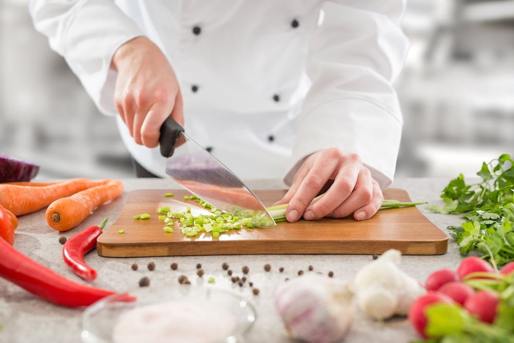
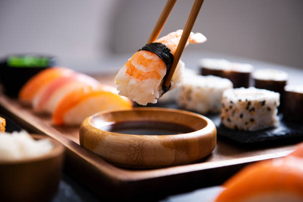

...About us...

Why choose us?
Experience the art of authentic Japanese cuisine with premium quality and friendly service. with over 30 branches.
Expert Chefs
Our certified sushi masters craft each dish with top-tier accuracy and passion.
Fresh & Fast
Sourced daily, prepared quickly for an exceptional dining experience.

Premium Quality
Only the finest ingredients for authentic flavors straight from Japan.
Diverse Menu
Explore beyond sushi with ramen, sake, tempura, and traditional dishes.
Why Dine with Us?
From traditional nigiri to modern fusion creations, our menu is designed to tantalize your taste buds with the freshest catch of the day.

Authentic Sushi Mastery.
At the heart of our kitchen lies a deep respect for tradition. We carefully prepare premium Japanese rice and apply time-honored curing techniques to bring out its natural flavor and texture. Each ingredient is chosen with intention, and every roll is crafted with patience and skill.
Locally Sourced Fish.
We use only the finest Japanese rice and follow traditional curing methods passed down through generations. Every ingredient is carefully selected to preserve authenticity and enhance flavor. Our chefs craft each piece with precision and passion, ensuring that every bite delivers a perfect balance of texture, freshness, and taste.


Daily Fresh Sourcing.
We believe great sushi starts at the docks. Our seafood is flown in daily from world-class markets, ensuring that every slice of sashimi offers the pure, clean taste of the ocean at its absolute peak.